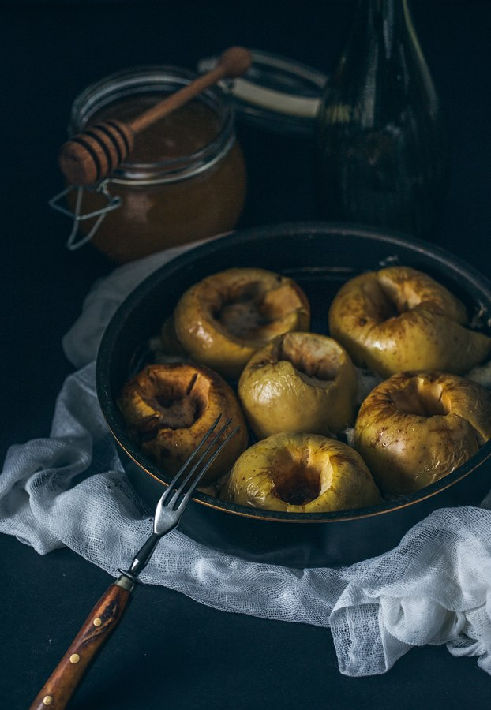

Русская кухня
Русская кухня — это намного больше, чем популярные стереотипы. За столетия были изобретены сотни супов, рыбных блюд, рецептов мяса и сладкого. А современная русская еда — это не только традиционные славянские блюда, но и несметное количество блюд более 150 национальностей, проживающих на всей огромной территории. Еще существует советское наследие, не говоря уже о ежедневной изобретательности людей, придумывающих все больше новых рецептов день за днем.
